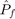
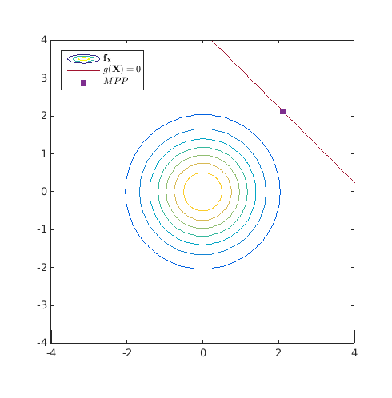
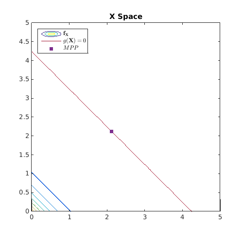
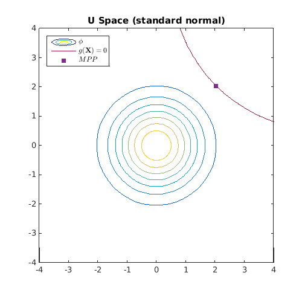
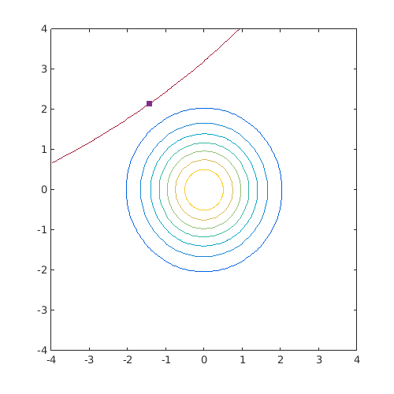
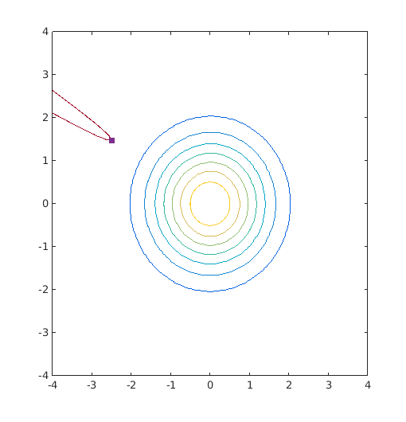

Examples / Reliability assessment / form
This file is a complete demo of the capability of the form function from the CODES toolbox.
Contents
Documentation
The documentation for the form function can be found here.
Set rng
Set random number generator seed:
rng(0)
Simple linear example
Compute the FORM  on a simple linear example:
g=@CODES.test.lin; res_form=CODES.reliability.form(g,2);
Compare to MC estimate
res_mc=CODES.reliability.mc(g,2); CODES.common.disp_matrix([res_form.beta res_mc.beta;res_form.Pf res_mc.Pf],... {'Beta','Pf'},{'FORM','MC'})
FORM MC Beta 3 2.99998 Pf 0.0013499 0.00135
Plot the limit state and the MPP
figure('Position',[200 200 500 500]) [X,Y]=meshgrid(linspace(-4,4,100)); Z=reshape(g([X(:) Y(:)]),size(X)); Z_pdf=reshape(prod(normpdf([X(:) Y(:)]),2),size(X)); Colors=get(gca,'ColorOrder'); contour(X,Y,Z_pdf) hold on contour(X,Y,Z,[0 0],'Color',Colors(end,:)) caxis([min(Z_pdf(:)) max(Z_pdf(:))]) plot(res_form.MPP(1),res_form.MPP(2),'s',... 'MarkerEdgeColor',Colors(4,:),... 'MarkerFaceColor',Colors(4,:)) axis equal leg=legend('$\mathbf{f}_{\mathbf{X}}$','$g(\mathbf{X})=0$','$MPP$',... 'location','NorthWest'); set(leg,'interpreter','latex')
Exponential distribution
Same example but the variable are exponentials. We use iso-probabilistic transformation:
T=@(x)norminv(expcdf(x,0.5));
Tinv=@(u)expinv(normcdf(u),0.5);
res_form=CODES.reliability.form(g,2,'Tinv',Tinv);
Compare with Monte Carlo estimate
res_mc=CODES.reliability.mc(g,2,'sampler',@(N)exprnd(0.5,N,2)); CODES.common.disp_matrix([res_form.beta res_mc.beta;res_form.Pf res_mc.Pf],... {'Beta','Pf'},{'FORM','MC'})
FORM MC Beta 3.09296 2.88566 Pf 0.000990845 0.001953
Plot the limit state and the MPP
figure('Position',[200 200 500 500]) [X,Y]=meshgrid(linspace(0,5,100)); [Xu,Yu]=meshgrid(linspace(-4,4,100)); Z=reshape(g([X(:) Y(:)]),size(X)); Zu=reshape(g(T([Xu(:) Yu(:)])),size(X)); Z_pdf=reshape(prod(exppdf([X(:) Y(:)],0.5),2),size(X)); Zu_pdf=reshape(prod(normpdf([Xu(:) Yu(:)]),2),size(X)); Colors=get(gca,'ColorOrder'); contour(X,Y,Z_pdf) hold on contour(X,Y,Z,[0 0],'Color',Colors(end,:)) caxis([min(Z_pdf(:)) max(Z_pdf(:))]) plot(res_form.MPP(1),res_form.MPP(2),'s',... 'MarkerEdgeColor',Colors(4,:),... 'MarkerFaceColor',Colors(4,:)) axis equal leg=legend('$\mathbf{f}_{\mathbf{X}}$','$g(\mathbf{X})=0$','$MPP$',... 'location','NorthWest'); set(leg,'interpreter','latex') title('X Space') figure('Position',[200 200 500 500]) contour(Xu,Yu,Zu_pdf) hold on contour(Xu,Yu,Zu,[0 0],'Color',Colors(end,:)) caxis([min(Zu_pdf(:)) max(Zu_pdf(:))]) MPPu=Tinv(res_form.MPP); plot(MPPu(1),MPPu(2),'s',... 'MarkerEdgeColor',Colors(4,:),... 'MarkerFaceColor',Colors(4,:)) axis equal leg=legend('$\phi$','$g(\mathbf{X})=0$','$MPP$','location','NorthWest'); set(leg,'interpreter','latex') title('U Space (standard normal)') 
Compare SQP and HL-RF
res_sqp=CODES.reliability.form(g,2,'Tinv',Tinv,'solver','sqp'); res_RFHL=CODES.reliability.form(g,2,'Tinv',Tinv,'solver','hl-rf'); CODES.common.disp_matrix([res_sqp.LS_count res_RFHL.LS_count],... {'# of LS calls'},{'SQP','HL-RF'})
SQP HL-RF # of LS calls 11 19
Providing gradient of the limit state function
res_sqp=CODES.reliability.form(g,2,'Tinv',Tinv,'solver','sqp'); res_sqp_grad=CODES.reliability.form(g,2,'Tinv',Tinv,'solver','sqp',... 'LS_grad',true); res_hlrf=CODES.reliability.form(g,2,'Tinv',Tinv,'solver','hl-rf'); res_hlrf_grad=CODES.reliability.form(g,2,'Tinv',Tinv,'solver','hl-rf',... 'LS_grad',true); CODES.common.disp_matrix([res_sqp.LS_count res_sqp_grad.LS_count;... res_hlrf.LS_count res_hlrf_grad.LS_count],{'SQP','HL-RF'},... {'FD','Grad'})
FD Grad SQP 11 7 HL-RF 19 7
Compare RIA algorithm
Compute MPP using different algorithm on semi-complex function
g_gen=@(x,alpha)x(:,1)-1.7*x(:,2)+alpha*(x(:,1)+1.7*x(:,2)).^2+5; g=@(x)g_gen(x,0.015); form_sqp=CODES.reliability.form(g,2,'solver','sqp'); form_hl_rf=CODES.reliability.form(g,2,'solver','hl-rf'); form_ihl_rf=CODES.reliability.form(g,2,'solver','ihl-rf'); form_jhl_rf=CODES.reliability.form(g,2,'solver','jhl-rf'); CODES.common.disp_matrix([form_sqp.LS_count form_sqp.MPP;... form_hl_rf.LS_count form_hl_rf.MPP;... form_ihl_rf.LS_count form_ihl_rf.MPP;... form_jhl_rf.LS_count form_jhl_rf.MPP],... {'SQP','HL-RF','iHL-RF','jHL-RF'},{'# func. call','X1','X2'}) figure('Position',[200 200 500 500]) Colors=get(gca,'ColorOrder'); [X,Y]=meshgrid(linspace(-4,4,100)); Z=reshape(g([X(:) Y(:)]),size(X)); contour(Xu,Yu,Zu_pdf) hold on contour(X,Y,Z,[0 0],'Color',Colors(end,:)) caxis([min(Zu_pdf(:)) max(Zu_pdf(:))]) plot(form_sqp.MPP(1),form_sqp.MPP(2),'s',... 'MarkerFaceColor',Colors(4,:),... 'MarkerEdgeColor',Colors(4,:));
# func. call X1 X2 SQP 12 -1.43614 2.1391 HL-RF 19 -1.43616 2.1391 iHL-RF 62 -1.43615 2.1391 jHL-RF 19 -1.43616 2.1391
On a complex function
g=@(x)g_gen(x,15); form_sqp=CODES.reliability.form(g,2,'solver','sqp'); form_hl_rf=CODES.reliability.form(g,2,'solver','hl-rf'); form_ihl_rf=CODES.reliability.form(g,2,'solver','ihl-rf'); form_jhl_rf=CODES.reliability.form(g,2,'solver','jhl-rf'); CODES.common.disp_matrix([form_sqp.LS_count form_sqp.MPP;... form_hl_rf.LS_count form_hl_rf.MPP;... form_ihl_rf.LS_count form_ihl_rf.MPP;... form_jhl_rf.LS_count form_jhl_rf.MPP],... {'SQP','HL-RF','iHL-RF','jHL-RF'},{'# func. call','X1','X2'}) figure('Position',[200 200 500 500]) Colors=get(gca,'ColorOrder'); [X,Y]=meshgrid(linspace(-4,4,100)); Z=reshape(g([X(:) Y(:)]),size(X)); contour(Xu,Yu,Zu_pdf) hold on contour(X,Y,Z,[0 0],'Color',Colors(end,:)) caxis([min(Zu_pdf(:)) max(Zu_pdf(:))]) plot(form_sqp.MPP(1),form_sqp.MPP(2),'s',... 'MarkerFaceColor',Colors(4,:),... 'MarkerEdgeColor',Colors(4,:));
# func. call X1 X2 SQP 54 -2.49389 1.47647 HL-RF 301 0.11018 0.247729 iHL-RF 1336 -2.49091 1.47333 jHL-RF 301 0.0750256 0.118531
Sensitivities
Here is ans example on how to compute sensitivities of the approximated probability of failure. See form help for details on the options.
g=@(x,z)CODES.test.lin([x repmat(z,size(x,1),1)]); T=@(x,mu)norminv(expcdf(x,mu)); Tinv=@(u,mu)expinv(normcdf(u),mu); z=0; mu=0.5; delta=1e-3; res_form=CODES.reliability.form(@(x)g(x,z),2,'Tinv',@(x)Tinv(x,mu),... 'eps',1e-5,'gz',g,'z',z,'T',T,'theta',mu); res_form_theta=CODES.reliability.form(@(x)g(x,z),2,... 'Tinv',@(x)Tinv(x,mu+delta),'eps',1e-5); res_form_z=CODES.reliability.form(@(x)g(x,z+delta),2,... 'Tinv',@(x)Tinv(x,mu),'eps',1e-5); dbetadz=(res_form_z.beta-res_form.beta)/delta; dPfdz=(res_form_z.Pf-res_form.Pf)/delta; dbetadtheta=(res_form_theta.beta-res_form.beta)/delta; dPfdtheta=(res_form_theta.Pf-res_form.Pf)/delta; CODES.common.disp_matrix([dPfdz res_form.dPfdz;dbetadz res_form.dbetadz;... dPfdtheta res_form.dPfdtheta;dbetadtheta res_form.dbetadtheta],... {'dPf/dz','dbeta/dz','dPf/dtheta','dbeta/dtheta'},... {'FD','Analytical'})
FD Analytical
dPf/dz 0.00031116 0.000310866
dbeta/dz -0.494595 -0.494567
dPf/dtheta 0.00325595 0.00323057
dbeta/dtheta -5.13241 -5.13962
Copyright © 2015 Computational Optimal Design of Engineering Systems (CODES) Laboratory. University of Arizona.
|
|
Computational Optimal Design of Engineering Systems |

|